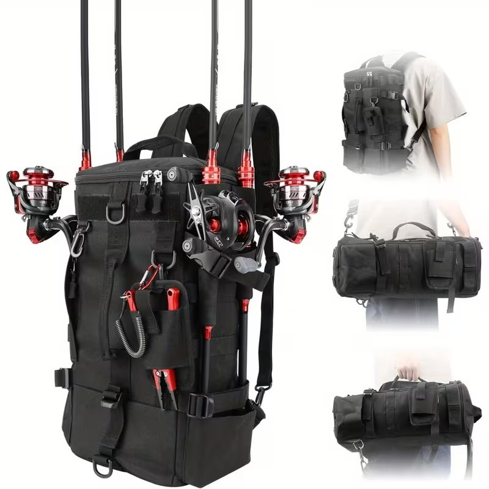
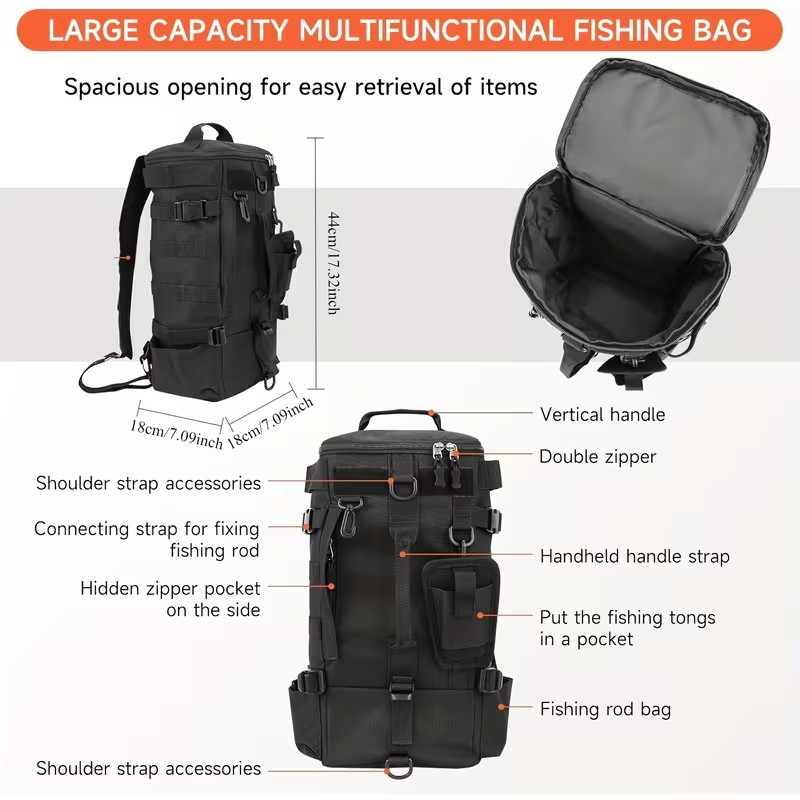
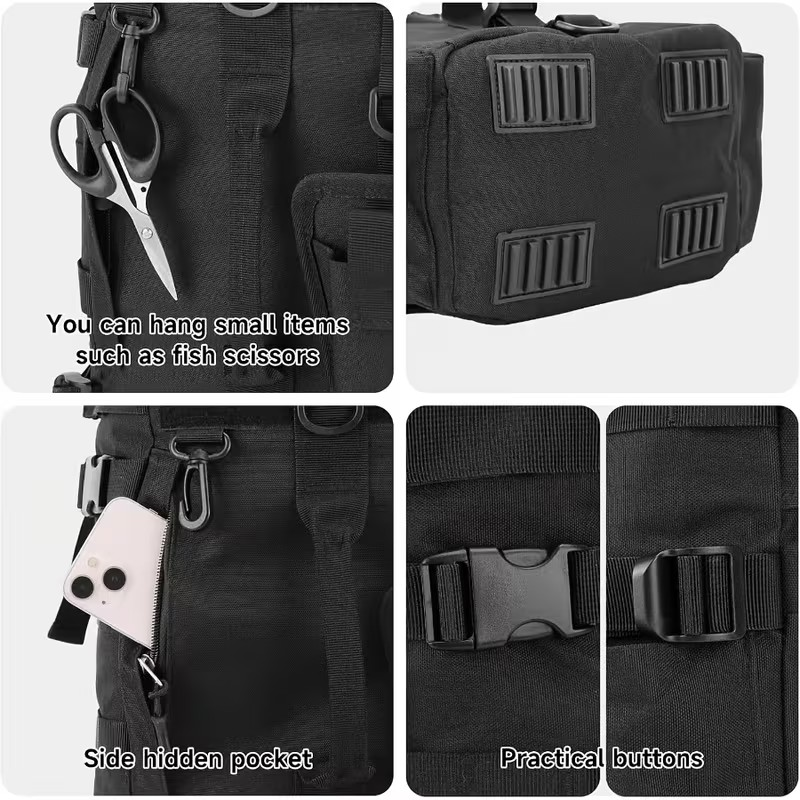
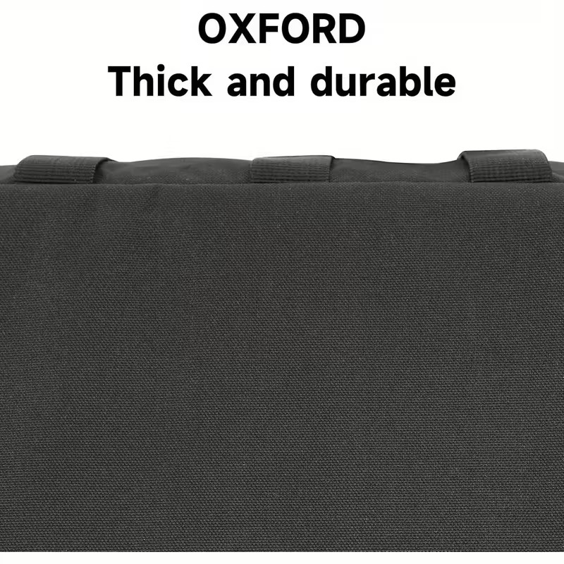

Keturios lazdos
Šoniniai laikikliai ir diržai — iki keturių lazdų vienu metu, o ranka vis tiek laisva.

Dovana tau
Visa įranga ant nugaros — lazdos, įrankiai ir vieta normaliai dienai prie vandens.
Šoniniai laikikliai ir diržai — iki keturių lazdų vienu metu, o ranka vis tiek laisva.
Storas, patvarus oksfordas — atlaiko purslą, smėlį ir uolas, bet neapkrauna pečių.
Užtraukiama šoninė kišenė telefonui ir raktams — paslėpta, bet po ranka, kai kibimas prasideda.
Kuprinė, per petį arba rankoje — per kelias sekundes, priklausomai kur žvejoji.



| Matmenys | 44 × 18 × 18 cm (aukštis × plotis × gylis) |
|---|---|
| Medžiaga | Patvarus, vandeniui atsparus oksfordo nailonas |
| Lazdų talpa | Iki 4 vertikalių lazdų laikiklių |
| Nešimo būdai | Kuprinė, per petį, rankoje |
| Pagrindinė erdvė | Didelė viršutinė užtraukiama anga |
| Apkaustai | Guminė bazė, D žiedai, tvirtos sagtys |
Mačiau, kaip neši tris atskirus krepšius, lazdą įspaustą po pažastimi, ir vis tiek pamiršti tą vieną daiktą, kurio labiausiai reikia. Tu nusipelnei įrangos, atitinkančios tavo požiūrį į žvejybą.
Tai ne užuomina žvejoti dažniau — na gerai, gal truputį. Tiesiog matau tavo ankstų kėlimąsi, kantrybę ir kaip užsidegi, kai pasakoji apie vietas, kurias žinai tik tu.
Tai tavo leidimas ateiti pasiruošusiam, atrodyti šiek tiek taktiškai ir pagauti ką nors, apie ką verta pasigirti.